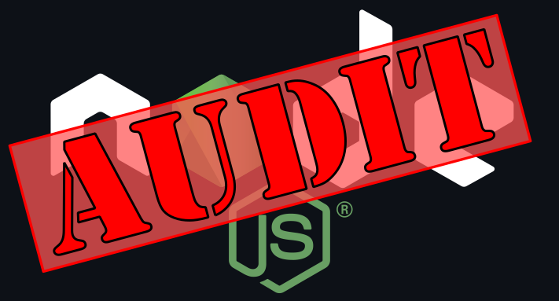

Node Version Audit: Source on Github



Node Version Audit is a convenience tool to easily check a given Node.js version against a regularly updated list of CVE exploits, new releases, and end of life dates.
Node Version Audit is not: exploit detection/mitigation, vendor-specific version tracking, a replacement for staying informed on Node.js releases and security exploits.
Index
Features
- List known CVEs for a given version of Node.js
- Check either the runtime version of Node.js, or a supplied version
- Display end-of-life dates for a given version of Node.js
-
Display new releases for a given version of Node.js with configurable specificity
(latest/minor/patch)
- Patch: 16.13.0 -> 16.13.2
- Minor: 16.13.0 -> 16.14.2
- Latest: 16.13.0 -> 17.9.0
- Rules automatically updated daily. Information is sourced directly from nodejs.org - you'll never be waiting on someone like me to merge a pull request before getting the latest patch information.
- Multiple interfaces: CLI (via NPM), Docker, direct code import
- Easily scriptable for use with CI/CD workflows. All Docker/CLI outputs are in JSON format to be consumed with your favorite tools - such as jq
- Configurable exit conditions. Use CLI flags like `--fail-security` to set a failure exit code if the given version of Node.js has a known CVE or is no longer supported.
- Zero dependencies
Example
npx node-version-audit@latest --version=16.14.1
{
"auditVersion": "16.14.1",
"hasVulnerabilities": true,
"hasSupport": true,
"supportType": "active",
"isLatestPatchVersion": false,
"isLatestMinorVersion": false,
"isLatestVersion": false,
"latestPatchVersion": "16.14.2",
"latestMinorVersion": "16.14.2",
"latestVersion": "17.9.0",
"activeSupportEndDate": "2022-10-18T00:00:00.000Z",
"supportEndDate": "2024-04-30T00:00:00.000Z",
"rulesLastUpdatedDate": "2022-04-13T02:37:54.081Z",
"vulnerabilities": {
"CVE-2022-778": {
"id": "CVE-2022-778",
"baseScore": 7.5,
"publishedDate": "2022-03-15T17:15:00.000Z",
"lastModifiedDate": "2022-04-06T20:15:00.000Z",
"description": "The BN_mod_sqrt() function, which computes a modular square root, contains a bug that can cause it to loop forever for non-prime moduli. Internally this function is used when parsing certificates that contain elliptic curve public keys in compressed form or explicit elliptic curve parameters with a base point encoded in compressed form. It is possible to trigger the infinite loop by crafting a certificate that has invalid explicit curve parameters. Since certificate parsing happens prior to verification of the certificate signature, any process that parses an externally supplied certificate may thus be subject to a denial of service attack. The infinite loop can also be reached when parsing crafted private keys as they can contain explicit elliptic curve parameters. Thus vulnerable situations include: - TLS clients consuming server certificates - TLS servers consuming client certificates - Hosting providers taking certificates or private keys from customers - Certificate authorities parsing certification requests from subscribers - Anything else which parses ASN.1 elliptic curve parameters Also any other applications that use the BN_mod_sqrt() where the attacker can control the parameter values are vulnerable to this DoS issue. In the OpenSSL 1.0.2 version the public key is not parsed during initial parsing of the certificate which makes it slightly harder to trigger the infinite loop. However any operation which requires the public key from the certificate will trigger the infinite loop. In particular the attacker can use a self-signed certificate to trigger the loop during verification of the certificate signature. This issue affects OpenSSL versions 1.0.2, 1.1.1 and 3.0. It was addressed in the releases of 1.1.1n and 3.0.2 on the 15th March 2022. Fixed in OpenSSL 3.0.2 (Affected 3.0.0,3.0.1). Fixed in OpenSSL 1.1.1n (Affected 1.1.1-1.1.1m). Fixed in OpenSSL 1.0.2zd (Affected 1.0.2-1.0.2zc)."
}
}
}
Usage
CLI
Running directly with npx is the preferred and easiest way to use Node Version Audit.
Execute the script, checking the run-time version of Node.js:
npx node-version-audit@latest
Produce an exit code if any CVEs are found or support has ended
npx node-version-audit@latest --fail-security
Docker
Prefer Docker? Not a problem. It is just as easy to run using Docker:
Check a specific version of Node.js using Docker:
docker run --rm -t lightswitch05/node-version-audit:latest --version=17.9.0
Check the host's Node.js version using Docker:
docker run --rm -t lightswitch05/node-version-audit:latest --version=$(node -e
"console.log(process.versions.node)")
Run behind an HTTPS proxy (for use on restricted networks). Requires a volume mount of a directory
with your trusted cert (with .crt extension) - see
update-ca-certificates
for more details.
docker run --rm -t -e https_proxy='https://your.proxy.server:port/' --volume
/full/path/to/trusted/certs/directory:/usr/local/share/ca-certificates
lightswitch05/node-version-audit:latest --version=17.9.0
Direct Invocation
Want to integrate with Node Version Audit? That is certainly possible. A word caution, this is a
very early release. I do not have any plans for breaking changes, but I am also not committed to
keeping the interface code as-is if there are new features to implement. Docker/CLI/JSON is
certainly the preferred over direct invocation.
const { NodeVersionAudit } = require('node-version-audit/lib/NodeVersionAudit');
const nodeVersionAudit = new NodeVersionAudit('17.8.0', true);
const auditResults = await nodeVersionAudit.getAllAuditResults();
auditResults.supportEndDate; //-> 2022-06-01T00:00:00.000Z
auditResults.hasVulnerabilities(); //-> true
JSON Rules
The data used to drive Node Version Audit is automatically updated on a regular basis and is hosted on GitHub pages. This is the real meat-and-potatoes of Node Version Audit, and you can consume it directly for use in other tools. If you choose to do this, please respect the project license by giving proper attribution notices. Also, I ask any implementations to read the lastUpdatedDate and fail if it has become out of date (2+ weeks). This should not happen since it is automatically updated… but we all know how fragile software is.
Get the latest Node.js 17 release version directly from the rules using
curl and jq:
curl -s https://www.github.developerdan.com/node-version-audit/rules-v1.json | jq
'.latestVersions["17"]'
Options
- --help
- show arguments help message and exit.
- --version=VERSION
- set the Node.js Version to run against. Defaults to the runtime version. This is required when running with docker.
- --fail-security
- generate a 10 exit code if any CVEs are found, or security support has ended.
- --fail-support
- generate a 20 exit code if the version of Node.js no longer gets active (bug) support.
- --fail-patch
- generate a 30 exit code if there is a newer patch-level release.
- --fail-minor
- generate a 40 exit code if there is a newer minor-level release.
- --fail-latest
- generate a 50 exit code if there is a newer release.
- --no-update
- do not download the latest rules. NOT RECOMMENDED!
- --silent
- do not write any error messages to STDERR.
- --v
- Set verbosity. v=warnings, vv=info, vvv=debug. Default is error. All logging writes to STDERR.
Output
- • auditVersion: string
- The version of Node.js that is being audited.
- • hasVulnerabilities: bool
- If the auditVersion has any known CVEs or not.
- • hasSupport: bool
- If the auditVersion is still receiving support.
- • supportType: string
- The current support status of auditVersion: 'current'|'active'|'maintenance'|'none'.
- • isLatestPatchVersion: bool
- If auditVersion is the latest patch-level release (17.9.x).
- • isLatestMinorVersion: bool
- If auditVersion is the latest minor-level release (17.x.x).
- • isLatestVersion: bool
- If auditVersion is the latest release (x.x.x).
- • latestPatchVersion: string
- The latest patch-level version for auditVersion.
- • latestMinorVersion: string
- The latest minor-level version for auditVersion.
- • latestVersion: string
- The latest Node.js version.
- • activeSupportEndDate: string|null
- ISO8601 formatted date for the end of active support for auditVersion.
- • supportEndDate: string|null
- ISO8601 formatted date for the end of maintenance support for auditVersion.
- • rulesLastUpdatedDate: string
- ISO8601 formatted date for the last time the rules were auto-updated.
- • vulnerabilities: object
- CVEs known to affect auditVersion with details about the CVE. CVE Details might be null for recently discovered CVEs.
Project Goals
- Always use update-to-date information and fail if it becomes too stale. Since this tool is designed to help its users stay informed, it must in turn fail if it becomes outdated.
- Fail if the requested information is unavailable. ex. auditing an unknown version of Node.js like 12.50.0, or 0.9.0. Again, since this tool is designed to help its users stay informed, it must in turn fail if the requested information is unavailable.
- Work in both open and closed networks (as long as the tool is up-to-date).
- Minimal footprint and dependencies (no runtime dependencies).
- Runtime support for the oldest supported version of Node.js. If you are using this tool with an unsupported version of Node.js, then you already have all the answers that this tool can give you: Yes, you have vulnerabilities and are out of date. Of course that is just for the run-time, it is still the goal of this project to supply information about any reasonable version of Node.js.
License & Acknowledgments
- This project is released under the Apache License 2.0.
- The accuracy of the information provided by this project cannot be verified or guaranteed. All functions are provided as convenience only and should not be relied on for accuracy or punctuality.
- The logo was created using Mathias Pettersson and Brian Hammond's Node.js Logo as the base image. The logo has been modified from its original form to include overlay graphics.
- This project and the use of the modified Node.js logo is not endorsed by Mathias Pettersson or Brian Hammond.
- This project and the use of the Node.js name is not endorsed by OpenJS Foundation.
- CVE details and descriptions are downloaded from National Institute of Standard and Technology's National Vulnerability Database. This project and the use of CVE information is not endorsed by NIST or the NVD. CVE details are provided as convenience only. The accuracy of the information cannot be verified.
- Node.js release details and support dates are generated from Changelogs and the Release Schedule. The accuracy of the information cannot be verified.